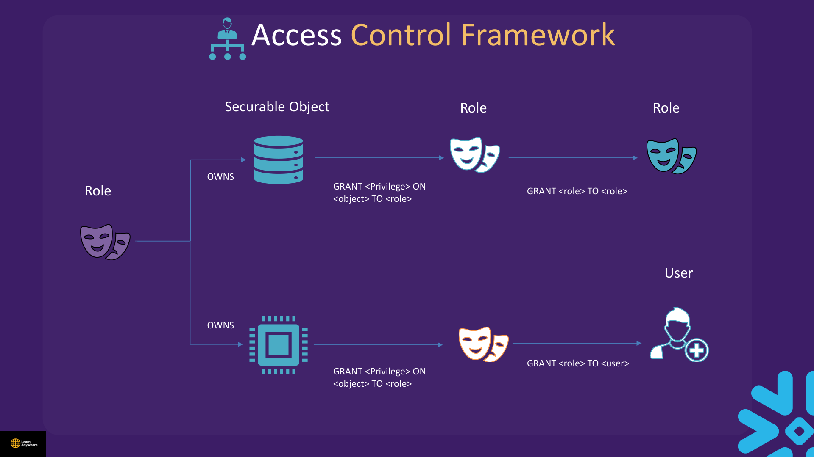
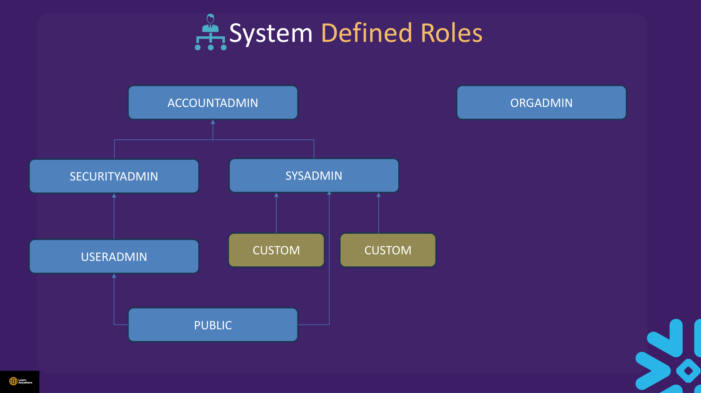
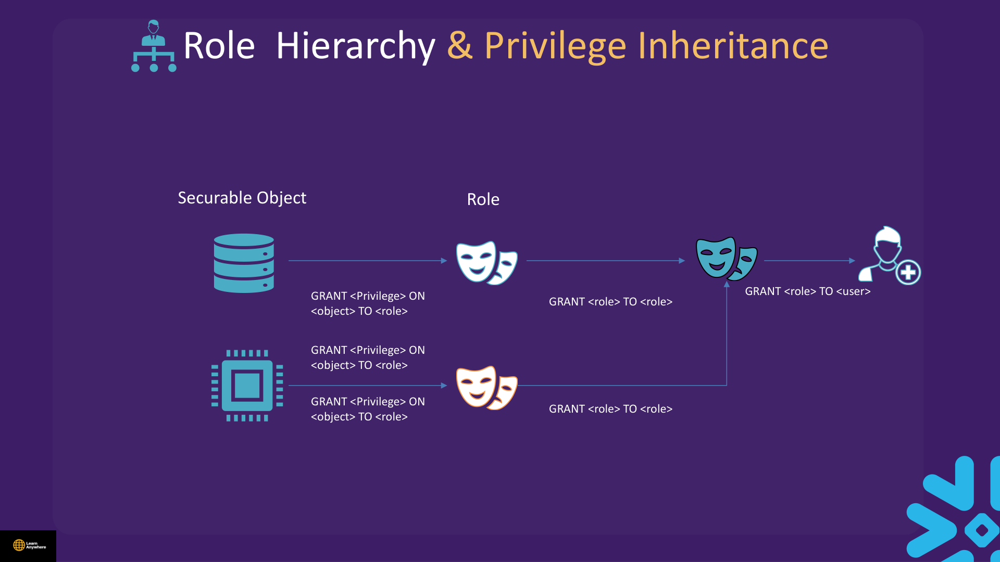
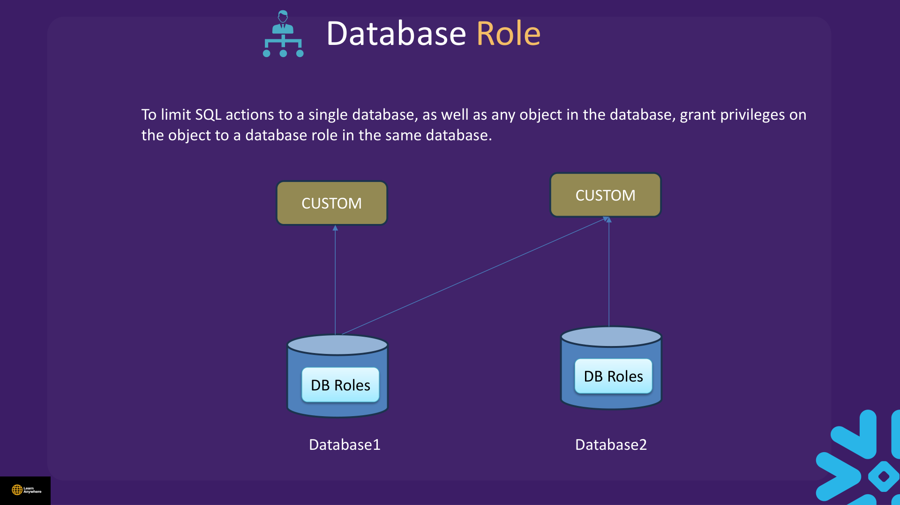
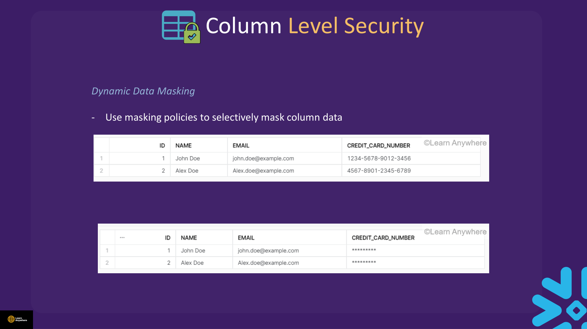
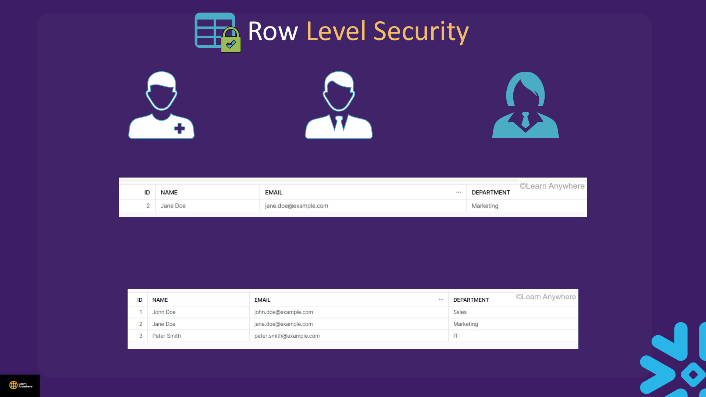

Lectures in this section
Every lecture below links to the notes that cover it.
- Access Control Framework Concept 6:20
- System Defined Roles 5:43
- Demo : Role Hierarchy And Privilege Inheritance 3:30 Access Control/Role Hirarchy.txt
- Demo : Access Control Framework 10:08 Access Control/Access Control Framework.txt
- Role Hierarchy And Privilege Inheritance Concept 3:36
- Database Role Concept 1:41
- Demo : Database Role 5:22 Access Control/DB Role.txt
- [COF-CO3] Demo : Secondary Role 4:26 Access Control/Secondary Role.txt
- [COF-CO3] Functional Role 3:02
- [COF-CO3] Demo : Functional Role 4:44 Access Control/Functional Role.txt
- Data Masking Policy Concept 1:05
- Demo : Data Masking Policy 4:24 Access Control/Data Masking.txt
- Row Level Masking Concept 1:42
- Demo : Row Level Masking 4:54 Access Control/ROW LEVEL ACCESS.txt
- Quiz
Access Control Framework
Snowflake combines two models. Discretionary access control (DAC) means every object has an owner who can grant access to it. Role-based access control (RBAC) means access privileges are assigned to roles, which are in turn assigned to users. Default stance: deny unless granted — unless a grant allows access, it is denied.

Securable object
An entity to which access can be granted — table, view, warehouse, database, integration, policy. Unless allowed by a grant, access is denied.
Privilege
A defined level of access to an object. Multiple distinct privileges control the granularity of access granted — e.g. SELECT, DELETE, OWNERSHIP.
Role
An entity to which privileges are granted. Roles are assigned to users, and can also be assigned to other roles, creating a role hierarchy.
User
A user identity recognised by Snowflake, whether associated with a person or a program.
Grant plumbing
Three grant patterns wire the framework together:
GRANT <privilege> ON <object> TO <role>— give a role access to an object.GRANT <role> TO <role>— build a role hierarchy.GRANT <role> TO <user>— assign a role to a user.
Account roles vs database roles
Account roles permit SQL actions on any object in your account — grant privileges on the object to an account role. Database roles limit actions to a single database and the objects inside it — grant privileges on the object to a database role in the same database.
Primary vs secondary active roles
Each session has one primary role — the default assumed role, set with USE ROLE <role name>. You can activate any number of secondary roles alongside it to combine privileges without switching primary. See Secondary roles for session commands and DEFAULT_SECONDARY_ROLES behaviour.
Table privileges
Privileges are granted to roles, and roles are granted to users, to specify the operations users can perform on objects. Table-level examples include SELECT, TRUNCATE, DELETE, and OWNERSHIP:
GRANT SELECT ON TABLE <table> TO ROLE <role>;Full privilege list: Snowflake access-control privileges documentation.
Grants, ownership & future grants
-- Privilege on object to role
GRANT SELECT ON TABLE study_security.lab.sales TO ROLE analyst;
-- Role to role (hierarchy)
GRANT ROLE analyst TO ROLE sysadmin;
-- Role to user
GRANT ROLE analyst TO USER <username>;
-- Future grants (apply to objects created later)
GRANT SELECT ON FUTURE TABLES IN SCHEMA study_security.lab TO ROLE analyst;
-- Transfer ownership (reassign owner + grants option)
GRANT OWNERSHIP ON TABLE study_security.lab.sales TO ROLE etl REVOKE CURRENT GRANTS;Managed access schemas
In a managed access schema, only the schema owner (or MANAGE GRANTS) can grant privileges on objects inside — prevents object owners from over-sharing sensitive tables.
CREATE SCHEMA study_security.secure_data WITH MANAGED ACCESS;Course file: Access Control/Access Control Framework.txt
PASSWORD='abc123' — never use demo passwords. Create users with MUST_CHANGE_PASSWORD = TRUE and strong secrets or SSO (see Section 11).
USE ROLE SYSADMIN;
CREATE OR REPLACE DATABASE dummy;
USE DATABASE dummy;
CREATE OR REPLACE SCHEMA dummy_sc;
CREATE OR REPLACE TABLE dummy.dummy_sc.cust_det (
id INT,
name VARCHAR(255)
);
USE ROLE USERADMIN;
CREATE USER user1 PASSWORD='<STRONG_TEMP_PASSWORD>' MUST_CHANGE_PASSWORD = TRUE;
USE ROLE SECURITYADMIN;
CREATE ROLE dummy_role;
GRANT ROLE dummy_role TO USER user1;
GRANT USAGE ON DATABASE dummy TO ROLE dummy_role;
GRANT USAGE ON SCHEMA dummy.dummy_sc TO ROLE dummy_role;
GRANT SELECT ON TABLE dummy.dummy_sc.cust_det TO ROLE dummy_role;
GRANT USAGE ON WAREHOUSE COMPUTE_WH TO ROLE dummy_role;
GRANT SELECT ON FUTURE TABLES IN SCHEMA dummy.dummy_sc TO ROLE dummy_role;
GRANT ROLE dummy_role TO ROLE sysadmin;
SHOW GRANTS TO ROLE dummy_role;SHOW GRANTS TO USER u; lists effective access. SHOW GRANTS ON USER u; lists who can modify the user object.
System-Defined Roles
Fixed roles shipped with every account. Custom production roles should generally be granted to SYSADMIN in the hierarchy so administrators inherit them.

| Role | Purpose |
|---|---|
ORGADMIN |
Manages operations at organisation level. Can create accounts in the organisation. Can view all accounts and all enabled regions via SHOW ORGANIZATION ACCOUNTS and SHOW REGIONS. Can check usage information across the organisation. Has access to account properties but not account data. |
ACCOUNTADMIN |
Parent to SYSADMIN and SECURITYADMIN. Should be assigned to a limited number of people. |
SECURITYADMIN |
Can manage any grant globally. Can create, manage, and monitor users and roles. Inherits the privileges of USERADMIN. |
SYSADMIN |
Role that has privileges to create warehouses and databases (and other objects) in an account. Assign all custom roles to SYSADMIN so administrators can manage them. |
USERADMIN |
Granted the CREATE USER and CREATE ROLE security privileges. Can create users and roles in the account. |
PUBLIC |
Pseudo-role automatically granted to all users and roles. Everyone has access to objects owned by PUBLIC. Used when explicit access control is not needed. |
SECURITYADMIN manages grants; SYSADMIN owns most created objects by default. ACCOUNTADMIN should be rare and MFA-protected — authentication details in Section 11.
Role Hierarchy & Privilege Inheritance
Roles can be granted to other roles. A user assuming a parent role inherits all privileges from child roles in the hierarchy. Always grant custom roles to SYSADMIN (or appropriate parent) so they are not orphaned. Database roles can sit alongside account roles in the same hierarchy.

Course file: Access Control/Role Hirarchy.txt
USE ROLE SECURITYADMIN;
CREATE OR REPLACE ROLE dummy_role;
GRANT USAGE ON DATABASE <YOUR_DB> TO ROLE dummy_role;
GRANT USAGE ON SCHEMA <YOUR_DB>.<YOUR_SCHEMA> TO ROLE dummy_role;
GRANT USAGE ON WAREHOUSE COMPUTE_WH TO ROLE dummy_role;
CREATE OR REPLACE ROLE dummy_role2;
GRANT USAGE ON SCHEMA <YOUR_DB>.<YOUR_SCHEMA2> TO ROLE dummy_role2;
GRANT ROLE dummy_role TO ROLE dummy_role2;
GRANT ROLE dummy_role2 TO ROLE sysadmin;
SHOW GRANTS TO ROLE dummy_role2;
GRANT ROLE dummy_role2 TO USER <your_user>;
USE ROLE dummy_role2;
GRANT SELECT ON TABLE <YOUR_DB>.<YOUR_SCHEMA>.customers TO ROLE dummy_role;Database Roles
Database roles are scoped to a single database — ideal for limiting admin blast radius. To limit SQL actions to a single database and any object in it, grant privileges on the object to a database role in the same database, then grant the database role to account roles.

Course file: Access Control/DB Role.txt
USE ROLE ACCOUNTADMIN;
CREATE OR REPLACE DATABASE study_security;
CREATE OR REPLACE SCHEMA study_security.lab;
USE DATABASE study_security;
CREATE OR REPLACE DATABASE ROLE reader;
GRANT USAGE ON DATABASE study_security TO DATABASE ROLE study_security.reader;
GRANT USAGE ON SCHEMA study_security.lab TO DATABASE ROLE study_security.reader;
GRANT SELECT ON ALL TABLES IN SCHEMA study_security.lab TO DATABASE ROLE study_security.reader;
CREATE OR REPLACE ROLE data_reader;
GRANT DATABASE ROLE study_security.reader TO ROLE data_reader;
GRANT ROLE data_reader TO USER <your_user>;
SHOW DATABASE ROLES IN DATABASE study_security;DATABASE ROLE study_security.reader, not a different DB prefix. Database roles cannot be granted across databases.
Primary & Secondary Roles
Each session has one primary role (USE ROLE). Secondary roles add privileges without switching primary — useful when a user holds multiple team roles.
Since the DEFAULT_SECONDARY_ROLES behaviour change, users and roles inherit DEFAULT_SECONDARY_ROLES = ('ALL') when the property is unset — all granted roles are active at login. To disable secondary roles at login for a user, set an empty list: ALTER USER … SET DEFAULT_SECONDARY_ROLES = (). For the current session only, run USE SECONDARY ROLES NONE.
Course file: Access Control/Secondary Role.txt
USE ROLE ACCOUNTADMIN;
CREATE OR REPLACE DATABASE demo_db;
CREATE OR REPLACE SCHEMA demo_db.demo_fin;
CREATE OR REPLACE SCHEMA demo_db.demo_sales;
CREATE OR REPLACE TABLE demo_db.demo_fin.customers (c_custkey INT, c_name STRING);
CREATE OR REPLACE TABLE demo_db.demo_sales.orders (o_orderkey INT, o_custkey INT, o_totalprice NUMBER(10,2));
USE ROLE SECURITYADMIN;
CREATE OR REPLACE ROLE role_fin;
CREATE OR REPLACE ROLE role_sales;
GRANT USAGE ON DATABASE demo_db TO ROLE role_fin;
GRANT USAGE ON SCHEMA demo_db.demo_fin TO ROLE role_fin;
GRANT SELECT ON TABLE demo_db.demo_fin.customers TO ROLE role_fin;
GRANT USAGE ON DATABASE demo_db TO ROLE role_sales;
GRANT USAGE ON SCHEMA demo_db.demo_sales TO ROLE role_sales;
GRANT SELECT ON TABLE demo_db.demo_sales.orders TO ROLE role_sales;
GRANT ROLE role_fin TO USER <your_user>;
GRANT ROLE role_sales TO USER <your_user>;
USE ROLE role_fin;
USE SECONDARY ROLES NONE;
SELECT * FROM demo_db.demo_fin.customers; -- OK
USE ROLE role_fin;
USE SECONDARY ROLES role_sales;
SELECT c.c_custkey, c.c_name, o.o_orderkey, o.o_totalprice
FROM demo_db.demo_fin.customers c
JOIN demo_db.demo_sales.orders o ON c.c_custkey = o.o_custkey;Functional vs Access Roles
- Access role — what can be done (e.g.
DB_FIN_RW,DB_HR_R). - Functional role — who in the org (e.g.
IT_ANALYST,IT_DEV) receives access roles.
Course file: Access Control/Functional Role.txt
USE ROLE SECURITYADMIN;
CREATE ROLE IF NOT EXISTS it_analyst;
CREATE ROLE IF NOT EXISTS it_dev;
CREATE ROLE IF NOT EXISTS db_fi_rw;
CREATE ROLE IF NOT EXISTS db_hr_r;
GRANT USAGE ON DATABASE finance_db TO ROLE db_fi_rw;
GRANT USAGE ON SCHEMA finance_db.fi_schema TO ROLE db_fi_rw;
GRANT SELECT, INSERT, UPDATE, DELETE ON ALL TABLES IN SCHEMA finance_db.fi_schema TO ROLE db_fi_rw;
GRANT USAGE ON DATABASE hr_db TO ROLE db_hr_r;
GRANT USAGE ON SCHEMA hr_db.hr_schema TO ROLE db_hr_r;
GRANT SELECT ON ALL TABLES IN SCHEMA hr_db.hr_schema TO ROLE db_hr_r;
GRANT ROLE db_hr_r TO ROLE it_analyst;
GRANT ROLE db_fi_rw TO ROLE it_dev;
CREATE USER newuser1 PASSWORD='<STRONG_TEMP_PASSWORD>' MUST_CHANGE_PASSWORD = TRUE;
GRANT ROLE it_analyst TO USER newuser1;
USE ROLE it_analyst;
SELECT * FROM hr_db.hr_schema.employees; -- OK
-- CREATE TABLE finance_db.fi_schema.temp (id INT); -- failsColumn-Level Security
Column-level security controls what values appear in query results at the column grain. Snowflake offers two mechanisms: dynamic data masking inside the platform, and external tokenization for sensitive data stored as tokens.
Dynamic Data Masking
Requires Enterprise edition or higher. Use masking policies to selectively mask column data at query time based on the viewer's role or other context.
External Tokenization
Tokenization removes sensitive data by replacing it with an undecipherable token. The original value lives outside Snowflake; only authorised detokenisation reveals it.

Dynamic Data Masking
A masking policy is a reusable function attached to a column. At query time Snowflake evaluates the viewer's role (or other context) and returns either the real value or a masked substitute — without creating duplicate tables.
Masking at query time
- Create with
CREATE MASKING POLICY … AS (val) RETURNS … - Attach with
ALTER TABLE … MODIFY COLUMN … SET MASKING POLICY … - Inspect attachments via
TABLE(INFORMATION_SCHEMA.POLICY_REFERENCES(…)) - Update body with
ALTER MASKING POLICY … SET BODY ->(different syntax than CREATE) - Detach before drop:
ALTER TABLE … UNSET MASKING POLICY
Course file: Access Control/Data Masking.txt
CREATE OR REPLACE TABLE cust (
id INT,
name VARCHAR(255),
email VARCHAR(255),
credit_card_number VARCHAR(255)
);
CREATE OR REPLACE MASKING POLICY cc_mask AS (val STRING) RETURNS STRING ->
CASE
WHEN CURRENT_ROLE() IN ('ACCOUNTADMIN') THEN val
ELSE '************'
END;
ALTER TABLE cust MODIFY COLUMN credit_card_number SET MASKING POLICY cc_mask;
SELECT * FROM TABLE(
INFORMATION_SCHEMA.POLICY_REFERENCES(POLICY_NAME => 'CC_MASK')
);
USE ROLE <limited_role>;
SELECT * FROM cust; -- credit_card maskedRow Access Policies
Row access policies (course title: Row Level Security) return TRUE or FALSE per row. If FALSE, the row is hidden from that user's query result — even if they have SELECT on the table. Requires Enterprise edition or higher.

The deck's worked illustration uses three departments — Sales, Marketing, and IT — on one table. A row access policy keyed on the department column ensures each role sees only rows matching its department. The lab below implements the same pattern with a mapping table.
| Feature | Masking policy | Row access policy |
|---|---|---|
| Granularity | Column values transformed | Entire rows included or excluded |
| Returns | Masked string/number/etc. | BOOLEAN (visible or not) |
| Typical use | Hide SSN, email, salary amount | Multi-tenant, department, region isolation |
Course file: Access Control/ROW LEVEL ACCESS.txt
CREATE OR REPLACE TABLE cust_row (
id INT,
name VARCHAR(255),
email VARCHAR(255),
department VARCHAR(255)
);
CREATE OR REPLACE TABLE mapping_tab (
curr_role VARCHAR(255),
dept VARCHAR(255)
);
INSERT INTO mapping_tab VALUES
('DUMMY_SALES', 'Sales'),
('DUMMY_MARK', 'Marketing'),
('DUMMY_IT', 'IT');
CREATE OR REPLACE ROW ACCESS POLICY dept_policy
AS (department VARCHAR) RETURNS BOOLEAN ->
CURRENT_ROLE() = 'ACCOUNTADMIN'
OR EXISTS (
SELECT 1 FROM mapping_tab m
WHERE m.curr_role = CURRENT_ROLE()
AND m.dept = department
);
ALTER TABLE cust_row ADD ROW ACCESS POLICY dept_policy ON (department);
USE ROLE dummy_sales;
SELECT * FROM cust_row; -- expect Sales row onlyUNSET / DROP ROW ACCESS POLICY from every object first.
Cleanup
ALTER TABLE IF EXISTS cust MODIFY COLUMN credit_card_number UNSET MASKING POLICY;
ALTER TABLE IF EXISTS cust_row DROP ROW ACCESS POLICY dept_policy;
DROP MASKING POLICY IF EXISTS cc_mask;
DROP ROW ACCESS POLICY IF EXISTS dept_policy;
DROP DATABASE IF EXISTS demo_db CASCADE;Common Mistakes
- Granting
ACCOUNTADMINwidely — use functional roles and least privilege. - Leaving objects owned by
PUBLIC— effectively visible to everyone. - Forgetting
USAGEon database/schema before tableSELECT. - Assuming secondary roles are off by default — unset
DEFAULT_SECONDARY_ROLESnow means('ALL')at login. - Confusing
USE SECONDARY ROLES NONEwith a user property — login default with no secondaries isDEFAULT_SECONDARY_ROLES = (). - Assuming masking replaces RBAC — users who own the table can still see raw data paths.
- Embedding passwords in worksheets or using course demo passwords.
Interview questions
Try to answer each one before opening it.
How do discretionary access control and role-based access control work together in Snowflake?Fundamentals
Snowflake combines both models. DAC means every securable object has an owner who can grant privileges on it. RBAC means privileges attach to roles, and roles attach to users — you grant to job titles, not individuals. Default stance is deny unless granted. In practice, object owners (often via SYSADMIN) create objects and grant privileges to access roles; functional roles receive those access roles up the hierarchy.
What are the system-defined roles and what is the difference between USERADMIN and SECURITYADMIN?Comparison
ORGADMIN manages organisation-level accounts and regions. ACCOUNTADMIN is the top account role, parenting both SECURITYADMIN and SYSADMIN. SECURITYADMIN manages grants globally and inherits USERADMIN — it is for privilege governance. USERADMIN has CREATE USER and CREATE ROLE only. SYSADMIN creates warehouses, databases, and most objects. PUBLIC is on every user automatically. USERADMIN creates identities; SECURITYADMIN wires them to data through grants.
Why should SYSADMIN own objects, and what is an orphaned role?Scenario
Custom production roles should be granted to SYSADMIN in the hierarchy so administrators inherit them and can manage lifecycle. If a role is granted only to a single user and that user leaves, or never parented under SYSADMIN, it becomes orphaned — hard to discover and govern. Objects created under a user's personal role instead of a team role create the same problem. Always grant custom roles up to SYSADMIN (or an appropriate parent) and use functional/access role patterns.
How does privilege inheritance flow through a role hierarchy?Fundamentals
Roles can be granted to other roles: GRANT ROLE analyst TO ROLE sysadmin. When a user assumes a parent role, they inherit all privileges from every child role granted below it in the hierarchy. Privileges do not flow downward — granting SYSADMIN to analyst does not give analyst SYSADMIN powers. Inspect effective access with SHOW GRANTS TO ROLE role_name and SHOW GRANTS TO USER u.
Why do users fail with "insufficient privileges" even after GRANT SELECT on a table?Gotcha
You almost always forgot USAGE on the parent database and schema. Snowflake requires the privilege chain: USAGE on database, USAGE on schema, then SELECT on the table — plus USAGE on a warehouse to run queries. Grant all three levels explicitly:
GRANT USAGE ON DATABASE dummy TO ROLE dummy_role;
GRANT USAGE ON SCHEMA dummy.dummy_sc ON ROLE dummy_role;
GRANT SELECT ON TABLE dummy.dummy_sc.cust_det TO ROLE dummy_role;What is the difference between future grants and GRANT … ON ALL?Comparison
GRANT SELECT ON ALL TABLES IN SCHEMA s TO ROLE r applies to objects that already exist at grant time. GRANT SELECT ON FUTURE TABLES IN SCHEMA s TO ROLE r applies to tables created later. You often need both — ALL for the current inventory, FUTURE for ongoing automation. Neither retroactively applies the other direction; new tables after an ALL grant still need a FUTURE grant to inherit automatically.
How do you transfer ownership and what REVOKE do you also need?Scenario
Use GRANT OWNERSHIP ON TABLE t TO ROLE new_owner REVOKE CURRENT GRANTS to transfer ownership and optionally strip existing grants in one step. Without REVOKE CURRENT GRANTS, the old owner's grants may remain. The new owner can then re-grant as needed. For managed access schemas, only the schema owner (or holders of MANAGE GRANTS) can grant on objects inside — preventing object owners from over-sharing.
How do database roles differ from account roles, and why do they matter for sharing?Fundamentals
Database roles are scoped to a single database — created with CREATE DATABASE ROLE reader inside that DB. Privileges are granted to DATABASE ROLE study_security.reader, then the database role is granted to an account role: GRANT DATABASE ROLE study_security.reader TO ROLE data_reader. They limit admin blast radius within one database and align with share boundaries — you can package database-scoped reader access without exposing account-wide privileges. Database roles cannot be granted across databases.
What problem do secondary roles solve, and what changed with DEFAULT_SECONDARY_ROLES?Gotcha
Secondary roles let a user combine privileges from multiple roles in one session without switching primary role — e.g. join finance customers with sales orders via USE SECONDARY ROLES role_sales. Since the behaviour change, unset DEFAULT_SECONDARY_ROLES now defaults to ('ALL') at login — all granted roles are active. To restrict at login, set ALTER USER u SET DEFAULT_SECONDARY_ROLES = (). For the current session only, use USE SECONDARY ROLES NONE.
Explain the functional role versus access role design pattern.Scenario
Access roles describe what can be done on specific data — e.g. DB_FI_RW (read/write on finance), DB_HR_R (read-only on HR). Functional roles describe who in the org — e.g. IT_ANALYST, IT_DEV. Grant access roles to functional roles: GRANT ROLE db_hr_r TO ROLE it_analyst. Users receive one functional role at login and inherit the right data access without a grant per person per table. Keeps RBAC auditable as teams and databases grow.
How do masking policies work, including conditional-column forms?Security
A masking policy is a reusable function attached to a column. At query time Snowflake evaluates the viewer's context (typically CURRENT_ROLE()) and returns the real value or a substitute. Create with CREATE MASKING POLICY cc_mask AS (val STRING) RETURNS STRING -> CASE WHEN CURRENT_ROLE() IN ('ACCOUNTADMIN') THEN val ELSE '************' END, attach with ALTER TABLE t MODIFY COLUMN col SET MASKING POLICY cc_mask. Conditional-column variants can mask only when another column meets a condition — useful for partial redaction. Requires Enterprise edition or higher. Masking is not encryption — users with raw stage access or broad ownership can bypass it if RBAC is too loose.
How do row access policies work, and in what order do masking and row access apply?Security
Row access policies return BOOLEAN per row — FALSE hides the entire row even if SELECT is granted. A mapping-table pattern joins CURRENT_ROLE() to allowed departments via EXISTS (SELECT 1 FROM mapping_tab m WHERE m.curr_role = CURRENT_ROLE() AND m.dept = department). Attach with ALTER TABLE t ADD ROW ACCESS POLICY p ON (department). Row access is evaluated first — ineligible rows are removed before masking runs on remaining rows. Both require Enterprise+. Always unset policies before dropping them.
What is the difference between dynamic data masking and external tokenization?Comparison
Dynamic data masking (Enterprise+) attaches a policy to a column inside Snowflake. At query time the policy evaluates the viewer's role and returns either the real value or a masked substitute — the underlying data stays in Snowflake. External tokenization replaces sensitive values with undecipherable tokens; the original data is removed and stored outside Snowflake. Tokenization is stronger for data that should never exist in clear text in the warehouse. Masking is simpler for role-based redaction of values that authorised roles still need to see.
When would you choose a database role over an account role?Fundamentals
Use an account role when privileges must span multiple databases — e.g. a platform admin who creates warehouses and manages grants account-wide. Use a database role when privileges should be confined to one database and its objects — e.g. a reader role for a shared analytics database. Grant privileges to DATABASE ROLE db.reader inside that database, then grant the database role to an account role. Database roles limit blast radius and align with share boundaries. They cannot be granted across databases.
Hands-on practice
Run these in a trial account on an X-Small warehouse with AUTO_SUSPEND = 60. Clean up when you finish.
-
Recreate the access-control framework lab: database
dummy, schemadummy_sc, tablecust_det, roledummy_role, and useruser1. Grant USAGE on database, schema, warehouse, and SELECT on the table plus a future-table grant. Verify withSHOW GRANTS TO ROLE dummy_role.SHOW GRANTS TO ROLE dummy_rolelists USAGE on database, schema, warehouse, SELECT oncust_det, and SELECT on future tables in the schema.Show solutionSQL
USE ROLE SYSADMIN; CREATE OR REPLACE DATABASE dummy; USE DATABASE dummy; CREATE OR REPLACE SCHEMA dummy_sc; CREATE OR REPLACE TABLE dummy.dummy_sc.cust_det (id INT, name VARCHAR(255)); USE ROLE USERADMIN; CREATE USER IF NOT EXISTS user1 PASSWORD='<STRONG_TEMP_PASSWORD>' MUST_CHANGE_PASSWORD = TRUE; USE ROLE SECURITYADMIN; CREATE OR REPLACE ROLE dummy_role; GRANT ROLE dummy_role TO USER user1; GRANT USAGE ON DATABASE dummy TO ROLE dummy_role; GRANT USAGE ON SCHEMA dummy.dummy_sc TO ROLE dummy_role; GRANT SELECT ON TABLE dummy.dummy_sc.cust_det TO ROLE dummy_role; GRANT USAGE ON WAREHOUSE COMPUTE_WH TO ROLE dummy_role; GRANT SELECT ON FUTURE TABLES IN SCHEMA dummy.dummy_sc TO ROLE dummy_role; GRANT ROLE dummy_role TO ROLE sysadmin; SHOW GRANTS TO ROLE dummy_role; -
Build a two-level role hierarchy:
dummy_rolewith access to one schema,dummy_role2granteddummy_roleand access to a second schema. Grantdummy_role2to SYSADMIN and to your user, then switch todummy_role2and confirm inherited privileges.As
dummy_role2, you can reach objects in both schemas because child-role privileges inherit upward through the grant chain.Show solutionSQL
USE ROLE SECURITYADMIN; CREATE OR REPLACE ROLE dummy_role2; GRANT ROLE dummy_role TO ROLE dummy_role2; GRANT ROLE dummy_role2 TO ROLE sysadmin; GRANT ROLE dummy_role2 TO USER <your_user>; USE ROLE dummy_role2; SHOW GRANTS TO ROLE dummy_role2; -
Create database
demo_dbwith schemasdemo_finanddemo_sales, rolesrole_finandrole_sales, and demonstrate secondary roles by joining customers to orders.With primary role
role_finandUSE SECONDARY ROLES NONE, the cross-schema join fails. WithUSE SECONDARY ROLES role_sales, the join returns matching rows.Show solutionSQL
USE ROLE ACCOUNTADMIN; CREATE OR REPLACE DATABASE demo_db; CREATE OR REPLACE SCHEMA demo_db.demo_fin; CREATE OR REPLACE SCHEMA demo_db.demo_sales; CREATE OR REPLACE TABLE demo_db.demo_fin.customers (c_custkey INT, c_name STRING); CREATE OR REPLACE TABLE demo_db.demo_sales.orders (o_orderkey INT, o_custkey INT, o_totalprice NUMBER(10,2)); INSERT INTO demo_db.demo_fin.customers VALUES (1, 'Alice'); INSERT INTO demo_db.demo_sales.orders VALUES (100, 1, 99.99); USE ROLE SECURITYADMIN; CREATE OR REPLACE ROLE role_fin; CREATE OR REPLACE ROLE role_sales; GRANT USAGE ON DATABASE demo_db TO ROLE role_fin; GRANT USAGE ON SCHEMA demo_db.demo_fin TO ROLE role_fin; GRANT SELECT ON TABLE demo_db.demo_fin.customers TO ROLE role_fin; GRANT USAGE ON DATABASE demo_db TO ROLE role_sales; GRANT USAGE ON SCHEMA demo_db.demo_sales TO ROLE role_sales; GRANT SELECT ON TABLE demo_db.demo_sales.orders TO ROLE role_sales; GRANT ROLE role_fin TO USER <your_user>; GRANT ROLE role_sales TO USER <your_user>; USE ROLE role_fin; USE SECONDARY ROLES role_sales; SELECT c.c_custkey, c.c_name, o.o_orderkey, o.o_totalprice FROM demo_db.demo_fin.customers c JOIN demo_db.demo_sales.orders o ON c.c_custkey = o.o_custkey; -
Create masking policy
cc_maskon acusttable'scredit_card_numbercolumn. Switch to a limited role and confirm masking; queryINFORMATION_SCHEMA.POLICY_REFERENCES.As ACCOUNTADMIN, credit card numbers appear in clear text. As a limited role, the column shows
************. Policy references lists the attachment oncredit_card_number.Show solutionSQL
CREATE OR REPLACE TABLE cust ( id INT, name VARCHAR(255), email VARCHAR(255), credit_card_number VARCHAR(255) ); INSERT INTO cust VALUES (1, 'Test', 'test@example.com', '4111111111111111'); CREATE OR REPLACE MASKING POLICY cc_mask AS (val STRING) RETURNS STRING -> CASE WHEN CURRENT_ROLE() IN ('ACCOUNTADMIN') THEN val ELSE '************' END; ALTER TABLE cust MODIFY COLUMN credit_card_number SET MASKING POLICY cc_mask; SELECT * FROM TABLE(INFORMATION_SCHEMA.POLICY_REFERENCES(POLICY_NAME => 'CC_MASK')); -
Grant table privileges explicitly: create a role with
SELECTonly (noDELETEorTRUNCATE) on a test table, then confirmDELETEfails whileSELECTsucceeds.The role can read rows but receives an insufficient-privileges error on
DELETEandTRUNCATE— demonstrating that privileges are granular, not all-or-nothing.Show solutionSQL
USE ROLE SECURITYADMIN; CREATE OR REPLACE ROLE read_only_demo; GRANT SELECT ON TABLE dummy.dummy_sc.cust_det TO ROLE read_only_demo; USE ROLE read_only_demo; SELECT * FROM dummy.dummy_sc.cust_det; -- OK -- DELETE FROM dummy.dummy_sc.cust_det; -- insufficient privileges -
Create row access policy
dept_policyoncust_rowusing mapping tablemapping_tab, then drop all lab objects in the correct order.As role
dummy_sales, only rows wheredepartment = 'Sales'appear. Cleanup succeeds only after unsetting policies before drops.Show solutionSQL
CREATE OR REPLACE TABLE cust_row ( id INT, name VARCHAR(255), email VARCHAR(255), department VARCHAR(255) ); INSERT INTO cust_row VALUES (1, 'Sales Rep', 's@example.com', 'Sales'), (2, 'Marketer', 'm@example.com', 'Marketing'); CREATE OR REPLACE TABLE mapping_tab (curr_role VARCHAR(255), dept VARCHAR(255)); INSERT INTO mapping_tab VALUES ('DUMMY_SALES', 'Sales'); CREATE OR REPLACE ROW ACCESS POLICY dept_policy AS (department VARCHAR) RETURNS BOOLEAN -> CURRENT_ROLE() = 'ACCOUNTADMIN' OR EXISTS ( SELECT 1 FROM mapping_tab m WHERE m.curr_role = CURRENT_ROLE() AND m.dept = department ); ALTER TABLE cust_row ADD ROW ACCESS POLICY dept_policy ON (department); -- Cleanup (revoke/unset before drop) ALTER TABLE IF EXISTS cust MODIFY COLUMN credit_card_number UNSET MASKING POLICY; ALTER TABLE IF EXISTS cust_row DROP ROW ACCESS POLICY dept_policy; DROP MASKING POLICY IF EXISTS cc_mask; DROP ROW ACCESS POLICY IF EXISTS dept_policy; DROP TABLE IF EXISTS cust; DROP TABLE IF EXISTS cust_row; DROP TABLE IF EXISTS mapping_tab; DROP DATABASE IF EXISTS demo_db CASCADE; DROP DATABASE IF EXISTS dummy CASCADE;
Recap
- DAC + RBAC: object owners grant; privileges attach to roles, roles to users; deny unless granted.
- Grant patterns:
GRANT privilege ON object TO role,GRANT role TO role,GRANT role TO user. - Account roles = account-wide; database roles = single database (generally available).
- Primary role via
USE ROLE; secondary roles combine privileges in one session. - System roles: ORGADMIN (org ops, no data), ACCOUNTADMIN (limited membership), SECURITYADMIN (grants), SYSADMIN (objects + custom roles), USERADMIN (create users/roles), PUBLIC (pseudo-role).
- Table privileges are granular: SELECT, TRUNCATE, DELETE, OWNERSHIP, etc.
- Column security: masking (Enterprise+) masks at query time; tokenization replaces with tokens.
- Row access hides whole rows by department/tenant (Enterprise+); evaluated before masking.
- Authentication, network policies, and encryption live in Section 11.